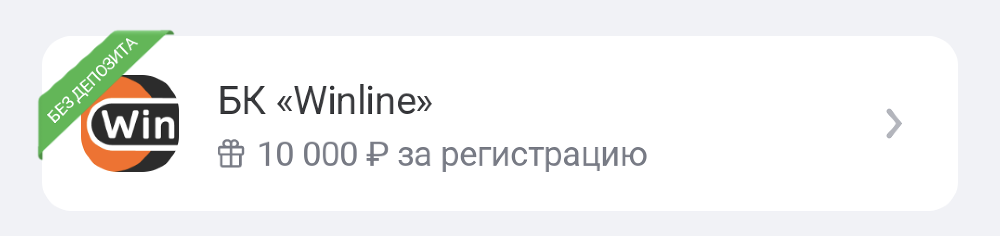

Партнеры
1. Badge-ленточки
2. Ripple эффект
3. Адаптивная ширина карточек


Загрузка блоков главного экрана реализована независимо, с fade-анимацией и адаптацией под разные состояния блока партнеров.
Теперь отображаются категории, а не отдельные платежи. При нажатии происходит переход к экрану с автоскроллом.